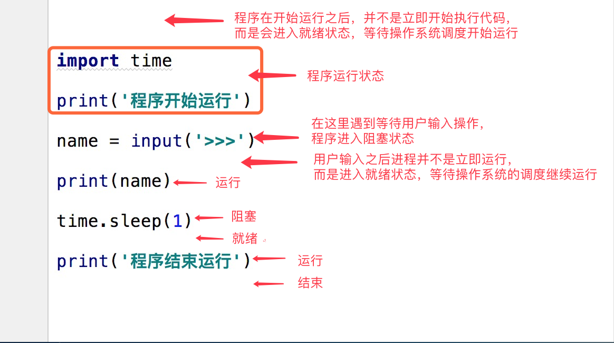

目录
一个计算机房，只能被一个穿孔卡片使用
缺点：
支持多用户去使用一个计算机房
高速磁盘：
优点：
时间上复用说明：
（1）若CPU遇到IO操作，会立即将当前执行程序CPU使用权断开
优点：CPU的利用率高
（2）若一个程序使用CPU的时间过长，会立即将当前执行程序CPU使用权断开
缺点：程序的执行率降低
并发：指的是看起来像同时运行，多个程序不停地切换 + 保存状态
并行：真实意义上的同时运行
当代操作系统使用的是：时间片轮转法 + 分级反馈队列
先来先服务调度：
a, b程序， 若a程序先来， 先占用CPU
缺点：程序a先使用，程序b必须等待程序a使用CPU结束后才能使用
短作业优先调度：
a, b程序，谁的用时短，先优先调度使用cpu
缺点：若程序a使用时间最长，有N个程序使用时间短，必须等待所有用时短的程序结束后才能使用
时间片轮转法
CPU执行的时间1秒中，加载N个程序。要将1秒钟等分N个时间片
分级反馈队列
将执行优先分为多层级别

指的是提交任务的方式
同步：若有两个任务需要提交，在提交第一个任务时，必须等待该任务执行结束后，才能继续提交并执行第二个任务。
异步：若有两个任务需要提交，在提交第一个任务时，不需要原地等待，立即可以提交并执行第二个任务。
最大化提高CPU的使用率：
尽可能减少不必要的IO操作
windows中创建子进程，会将当前父进程代码重新加载执行一次
在Linux/mac中，会将当前父进程重新拷贝一份，再去执行
from multiprocessing import Process
import time
# 定义一个任务
def task(name):
print(f'{name}的任务开始执行')
time.sleep(1)
print(f'{name}的任务已经结束')
if __name__ == '__main__':
p = Process(target=task, args=('cwz',))
p.start()
print('主进程')
'''
主进程
cwz的任务开始执行
cwz的任务已经结束
'''
# 自定义一个类，并继承Process
class MyProcess(Process):
# 父类方法
def run(self):
print('开始执行任务')
time.sleep(1)
print('结束执行任务')
if __name__ == '__main__':
p = MyProcess()
p.start()
print('主进程')
'''
主进程
开始执行任务
结束执行任务
'''用来告诉操作系统，让子进程结束后再结束父进程
from multiprocessing import Process
import time
def task(name):
print(f'{name} start...')
time.sleep(2)
print(f'{name} over...')
if __name__ == '__main__':
p = Process(target=task, args=('neo', ))
p.start() # 告诉操作系统，开启子进程
p.join() # 告诉操作系统，结束子进程后，父进程再结束
print('主进程')
'''
neo start...
neo over...
主进程
'''from multiprocessing import Process
import time
x = 100
def func():
print('执行func函数')
global x
x = 200
if __name__ == '__main__':
p = Process(target=func)
p.start()
print(x) # 不能修改x的值
print('主进程')
'''
100
主进程
执行func函数
'''进程间数据相互隔离：
主进程与子进程间会有各自的名称空间
p.daemon：默认值为False，如果设为True，代表p为后台运行的守护进程，当p的父进程终止时，p也随之终止，并且设定为True后，p不能创建自己的新进程，必须在p.start()之前设置p.name：进程的名称p.pid：进程的pidp.exitcode：进程在运行时为None、如果为–N，表示被信号N结束(了解即可)p.authkey：进程的身份验证键,默认是由os.urandom()随机生成的32字符的字符串。这个键的用途是为涉及网络连接的底层from multiprocessing import Process
from multiprocessing import current_process
import time
import os
def task(name):
# current_process().pid 获取子进程号
print(f'{name} start...', current_process().pid)
time.sleep(2)
print(f'{name} over...', current_process().pid)
if __name__ == '__main__':
p = Process(target=task, args=('neo', ))
p.start()
print('主进程', os.getpid())
print('主主进程', os.getppid())
'''
主进程 12576
主主进程 12476
neo start... 7772
neo over... 7772
'''进程号回收的两种条件：
主进程这里指的是python解释器
主主进程指的是pycharm
p.is_alive 可以查看子进程存活状态
from multiprocessing import Process
from multiprocessing import current_process
import time
import os
def task(name):
# current_process().pid 获取子进程号
print(f'{name} start...', current_process().pid)
time.sleep(2)
print(f'{name} over...', current_process().pid)
if __name__ == '__main__':
p = Process(target=task, args=('neo', ))
p.start()
# p.join()
print(p.is_alive())
p.terminate() # 直接告诉操作系统，终止子进程
time.sleep(1)
print(p.is_alive()) # 判断子进程是否存活
print('主进程', os.getpid())
print('主主进程', os.getppid())
'''
True
False
主进程 10708
主主进程 12476
'''指的是子进程已经结束，但PID号还存在，未销毁
僵尸进程会占用PID号，占用操作系统资源
指的是子进程还在执行，但父进程意外结束。
操作系统内部优化机制：会自动回收没有父的子进程
指的是主进程结束后，该主进程产生的所有子进程跟着结束，并回收
from multiprocessing import Process
from multiprocessing import current_process
import time
def task(name):
print(f'{name} start...', current_process().pid)
time.sleep(3)
print(f'{name} over...', current_process().pid)
print('子进程')
if __name__ == '__main__':
p = Process(target=task, args=('cwz', ))
p.daemon = True # True表示该进程是守护进程
p.start()
print('主进程')
'''
主进程
'''